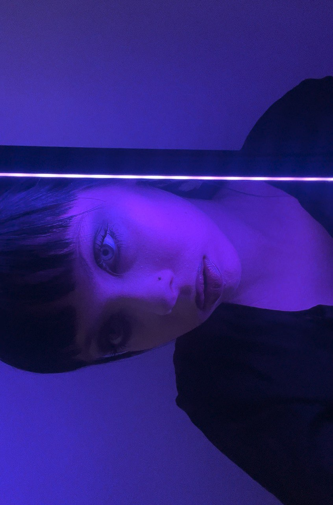

Мельник Олександра Анатоліївна

Біографія
Народилася 9 лютого 2006 року у місті
Київ. До двох років жила у місті
Новодністровськ
Чернівецької області. Згодом переїхала у місто
Хмельницький, де проживала до 15 років. Закінчила 9 класів у
Навчально-виховному комплексі №4.
У позашкільний час відвідувала різні гуртки, такі як:
- інформатика
- англійська мова
- художня школа
Раннє дитинство
З дитинства полюбляла малювати. Завдяки батькам, які вірили у мене та дали
мені можливість переїхати у
Львів, я змогла вступити у художній
коледж ім. І. Труша
на факультет графічного дизайну. Мені подобається естетика та навчання у
ньому.
Свій вільний час я люблю проводити за:
в'язанням;
читанням;
грою на укулеле;
Сьогодення та початок чогось нового
Нещодавно почала грати на калімбі, доволі цікавий інструмент. Я хотіла
колись опанувати професію тату майстра, завдяки коледжу мої навички у сфері
малювання зросли,і я зрозуміла, що варто спробувати. Мене навчала чудова
тату майстриня, яка передала мені всі свої навички, які згодом я передала
своєму найкращому учню.
Мої роботи ви зможете переглянути у інстаграмі
@marssi.tattoo . Підписуйтесь щоб мати змогу стежити за моїм творчим шляхом тату
майстрині.